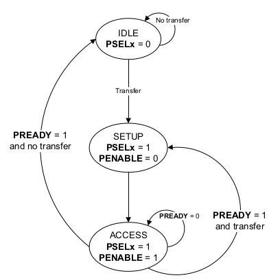

TLDR
For a very long time, I have wanted a decent VHDL library for a simple on-chip bus. By a decent VHDL bus library, I mean a VHDL bus library which:
At first, I got the idea that I would design and implement my custom on-chip bus. However, I quickly gave up on this idea. Why? Well, I think we all know the competing standard xkcd strip. Too much choice in the infrastructure components often leads to unnecessary waste of time as additional glue modules must be implemented. Those modules are frequently implemented ad-hoc and have questionable quality. I know because I have seen and used multiple of them. As I want to constantly improve the quality of what I utilize, I have decided to review existing on-chip buses and choose one.
The first thing that struck me was that almost no open-source VHDL libraries provide on-chip buses. If you are a SystemVerilog guy, you can easily find a few by simply googling, for example, pulp-platform/axi. The best VHDL bus library I have found is the one that provides the Wishbone bus, which is part of the general-cores library. From my point of view, this library does not provide two important modules, a Checker and a BFM. On the other hand, it provides modules that, in my humble opinion, should not be a part of any bus library. For example, a PWM (Pulse-Width Modulator) or timer. I prefer when peripherals are part of a separate library and are only attached to a particular bus in the design. Such an approach helps to keep a bus library concise and makes peripherals more reusable.
My review confirmed that two bus types are much more prevalent in the FPGA domain than all others, namely Wishbone and AXI. I have been a Wishbone user for a few years, so my first idea was to implement a library for Wishbone. However, the more complex things I was doing, the more I was leaning towards the opinion that Wishbone is not a good specification. Explaining why I am moving away from using Wishbone is not the goal of this post, but it is a good topic for another one, so if I find some free time, I hope to provide some arguments.
My second idea was to implement a library for AXI. However, AXI is a really complex bus with multiple functionalities. AXI is probably the best choice for high-demanding systems. However, my experience is that in most electronic systems much more simpler bus can do the job. I also wanted my first bus library to be simple because I wanted to finish the implementation in a "finite time". I am aware of AXILite, but this is still AXI just simplified.
As I was aware that AXI is just one of the specifications that are part of the AMBA (Advanced Microcontroller Bus Architecture), I have decided to get to know the others. When I found out APB, I thought this was exactly what I needed. The second argument in favor of APB is that it is already a member of AMBA family specifications. Those specifications are:
where a product created under Clause 1(i) is an integrated circuit which includes a CPU then either: (a) such CPU shall only be manufactured under licence from Arm; or (b) such CPU is neither substantially compliant with nor marketed as being compliant with the Arm instruction sets licensed by Arm from time to time;
The remaining content of the post consists of two parts. The first contains APB thoughts, and the second contains VHDL mode view thoughts.
The APB stands for Advanced Peripheral Bus. The APB was introduced in 1997, and maybe it was advanced back then. Nowadays, compared to, for example, AXI, it is rather trivial. But don't get me wrong, correctly implementing APB logic is still not simple.
In AMBA 5, Arm changed the terminology. What used to be called a "Master" in the APB is now called a "Requester", and what used to be called a "Slave" is now called a "Completer". It is also interesting to mention that Arm also changed the terminology for AXI. However, in the case of AXI, what used to be called a "Master" is now called a "Manager", and what used to be called a "Slave" is now called "Subordinate". I think the terminology change was more appropriate in the case of APB. In the case of AXI, they simply replaced old slavery terminology with modern corporate 21st-century slavery terminology. The "Requester" and "Completer" also have the same number of letters, which often leads to natural text alignment. This is not true for the "Manager" and "Subordinate".
The APB was designed for low bandwidth control access, such as register interfaces on system peripherals. But what does the low bandwidth mean? Estimating maximum APB bandwidth is relatively easy. The maximum APB data width is 32 bits. To transfer a single word in a block transaction, APB requires a minimum of 2 clock cycles. Answering the question of what is the maximum APB clock frequency is not an easy task, as it depends on multiple factors, for example, design size or number of modules connected to the bus. However, for simplicity, let's assume our APB bus frequency is 100 MHz (I believe in a well-implemented design, 200 MHz is achievable). In our case, the maximum theoretical APB bandwidth equals:32 bits * 100 MHz / 2 = 1600 Mb/s = 200 MB/s
A practical maximum bandwidth is, of course, a little bit lower due to various reasons. For example:
The biggest drawback of the APB is probably its half-duplex nature. You can't read and write at the same time. If you directly connect APB to the CPU, it will limit your CPU performance as RAM access takes much longer than 2 or 3 clock cycles. Moreover, a compiler will not be able to optimize memory accesses fully. It will be able to reshuffle access order, but it won't be able to read data for the next operation while writing the result of the previous operation. I think, that was the main reason the AHB (Advanced High-performance Bus) was introduced in 1999.
The most significant advantage of the APB is its simplicity. Revision 5 from 2023 has only 48 pages, including all non-technical information. Not only is the specification simple, but also the logic one has to describe to get the bus to operate correctly. If you assume your Requesters and Completers are bugs-free, then you can simply discard the PENABLE signal during the transaction entry condition check. This, in turn, potentially leads to shorter critical paths and higher bus clock frequency.
The APB specification contains the diagram presenting the operating states of the APB interface. You can see the diagram in the below picture.
Be careful when you read the specification and analyze the diagram. It presents state changes for a Requester, but the specification does not mention this. A Checker or Completer might use the same states. However, the edges for transitions are different. What is more, in my humble opinion, the text for three edges is incorrect:
Mode view is the mechanism introduced in VHDL revision 2019. Some people call this mechanism the "interface" as a similar mechanism available in SystemVerilog is called the "interface". In my humble opinion, using the term "interface" is inappropriate for two reasons:
An interface declaration is an interface object declaration, an interface type declaration, an interface subprogram declaration, or an interface package declaration. interface_declaration ::= interface_object_declaration | interface_type_declaration | interface_subprogram_declaration | interface_package_declaration
Long story short, the mode view allows each subelement of the composite to have a different mode. People often use the term "direction" instead of the "mode". However, this is incorrect. Have a look at the following two definitions from the LRM:
direction ::= to | downto mode ::= in | out | inout | buffer | linkage
The snippet below presents an example of mode view indication for a record type. I have used the name "interface_t" for the record type because it is the word used in the APB specification. However, this record is not an interface from the VHDL point of view.
-- Mode view approach type interface_t is record addr : unsigned(31 downto 0); prot : protection_t; nse : std_logic; selx : std_logic; enable : std_logic; write : std_logic; wdata : std_logic_vector(31 downto 0); strb : std_logic_vector( 3 downto 0); ready : std_logic; rdata : std_logic_vector(31 downto 0); slverr : std_logic; wakeup : std_logic; auser : std_logic_vector(127 downto 0); wuser : std_logic_vector( 15 downto 0); ruser : std_logic_vector( 15 downto 0); buser : std_logic_vector( 15 downto 0); end record; type interface_array_t is array (natural range <>) of interface_t; view requester_view of interface_t is addr : out; prot : out; nse : out; selx : out; enable : out; write : out; wdata : out; strb : out; ready : in; rdata : in; slverr : in; wakeup : out; auser : out; wuser : out; ruser : in; buser : in; end view; alias completer_view is requester_view'converse;
The below snippet presents how the same is usually achieved in the pre-VHDL 2019 revision.
-- Two record approach type requester_out_t is record addr : unsigned(31 downto 0); prot : protection_t; nse : std_logic; selx : std_logic; enable : std_logic; write : std_logic; wdata : std_logic_vector(31 downto 0); strb : std_logic_vector( 3 downto 0); wakeup : std_logic; auser : std_logic_vector(127 downto 0); wuser : std_logic_vector( 15 downto 0); end record; type requester_in_t is record ready : std_logic; rdata : std_logic_vector(31 downto 0); slverr : std_logic; ruser : std_logic_vector( 15 downto 0); buser : std_logic_vector( 15 downto 0); end record; type requester_out_array_t is array (natural range <>) of requester_out_t; type requester_in_array_t is array (natural range <>) of requester_in_t; subtype completer_in_t is requester_out_t; subtype completer_out_t is requester_in_t; type completer_out_array_t is array (natural range <>) of completer_out_t; type completer_in_array_t is array (natural range <>) of completer_in_t;
Now, let's look at an example entity interface utilizing mode views. The below snippet presents the interface of a Crossbar. I have chosen a Crossbar because it will allow me to show some inconvenience of using mode views.
entity Crossbar is
generic (
REQUESTER_COUNT : positive := 1;
COMPLETER_COUNT : positive := 1;
ADDRS : addr_array_t(0 to COMPLETER_COUNT - 1); -- Completer addresses
MASKS : mask_array_t(0 to COMPLETER_COUNT - 1) -- Completer address masks
);
port (
arstn_i : in std_logic := '1';
clk_i : in std_logic;
requesters : view (completer_view) of interface_array_t(0 to REQUESTER_COUNT - 1);
completers : view (requester_view) of interface_array_t(0 to COMPLETER_COUNT - 1)
);
end entity;
The below snippet presents how the same is usually achieved in the pre-VHDL 2019 revision.
entity Crossbar is
generic (
REQUESTER_COUNT : positive := 1;
COMPLETER_COUNT : positive := 1;
ADDRS : addr_array_t(0 to COMPLETER_COUNT - 1); -- Completer addresses
MASKS : mask_array_t(0 to COMPLETER_COUNT - 1) -- Completer address masks
);
port (
arstn_i : in std_logic := '1';
clk_i : in std_logic;
requesters_out_i : in requester_out_array_t(0 to REQUESTER_COUNT - 1);
requesters_in_o : out requester_in_array_t(0 to REQUESTER_COUNT - 1);
completers_in_o : in completer_in_array_t(0 to COMPLETER_COUNT - 1);
completers_out_i : out compleyer_out_array_t(0 to COMPLETER_COUNT - 1)
);
end entity;
The number of ports required for the bus signals is doubled compared to the mode view approach. So is the number of bus signals declared in various architectures where bus signal routing is required. This was actually one of the goals of the mode view introduction - reduction of required signal declarations. The second one was probably increased readability and maintainability, although I doubt whether the mode view mechanism provides them.
Now, I would like to present some drawbacks I have encountered while using mode views. The Crossbar is a perfect case here, as the goal of the Crossbar is to connect a given Requester with a Completer addressed by this Requester. As the mode view should be used to represent module interfaces, there is a natural desire to directly assign port signals declared using mode views to each other. For example, something like this:
completers(c) <= requesters(r); requesters(r) <= completers(c);
However, you can't do this if your target signal has a mode view indication with at least one subelement declared as in. You have to do it one by one for each out subelement, or you will get an error. For example, with the nvc simulator, I get the following error:
** Error: cannot assign to port COMPLETERS with mode view indication as one or more
sub-elements have mode IN
> /home/mkru/workspace/vhdl/vhdl-amba5/apb/crossbar.vhd:174
|
174 | completers(c) <= requesters(r);
| ^^^^^^^^^^^^^ target of signal assignment
|
= Note: element READY declared with mode IN
Of course, you can come around this inconvenience by defining a procedure for subelement assignments between two signals with given mode views. For example, something like this:
procedure assign ( signal req : view completer_view; signal com : view requester_view ) is begin com.addr <= req.addr; com.prot <= req.prot; com.nse <= req.nse; com.selx <= req.selx; com.enable <= req.enable; com.write <= req.write; com.wdata <= req.wdata; com.strb <= req.strb; com.auser <= req.auser; com.wuser <= req.wuser; req.ready <= com.ready; req.rdata <= com.rdata; req.slverr <= com.slverr; req.ruser <= com.ruser; req.buser <= com.buser; end procedure;
However, with the procedure workaround you:
** Error: actual associated with signal parameter REQ must be denoted
by a static signal name
> /home/mkru/workspace/vhdl/vhdl-amba5/apb/crossbar.vhd:183
|
183 | assign(requesters(r), completers(c));
| ^^^^^^^^^^^^^ not a static signal name
|
= Note: the --relaxed option downgrades this to a warning
= Help: IEEE Std 1076-2008 section 4.2.2.3 "Signal parameters"
= Help: IEEE Std 1076-2019 section 8.1 "Names"
We need a procedure with the following signature:
procedure assign ( signal req : view (completer_view) of interface_array_t; r : natural; signal com : view requester_view );We end up with two procedures. One for entities utilizing view modes and one for entities utilizing view mode arrays. Even more verbosity.
In the traditional pre-VHDL 2019 approach, we are free of the above drawbacks as we can simply do the following:
completers_in_o(c) <= requesters_out_i(r); requesters_in_o(r) <= completers_out_i(c);
Nevertheless, I would probably still use the mode view approach regardless of the inconveniences, as these are rather library maintainer inconveniences, not library users. However, there is one thing that is VHDL mode view killer, and I describe it in the following section.
The VHDL mode view killer is ... *BA DUM TSSS* ... lack of support. What a surprise. In the case of the simulators, the situation is not so bad. Free and open-source nvc supports view mode. Commercial and proprietary Aldec Riviera Pro also supports mode view. However, mode view is not a mechanism that makes a difference in a simulation. It is a mechanism that makes a difference in synthesis.
The below table summarizes VHDL 2019 mode view support. It includes only FGPA EDA tools. I am unfamiliar with ASIC EDA tools and have no access to them. I am leaving the fact that Intel supports mode view, but it is behind the paywall in the Pro edition without a comment. There is also Achronix utilizing Synplify-Pro for synthesis and QuickLogic utilizing Mentor Graphics tools for synthesis. As both use external ASIC tools for synthesis, I don't know whether they support the VHDL 2019 mode view.
| EDA Tool | Mode View Support | Mode View Array Support |
|---|---|---|
| AMD Vivado | Yes | Not sure |
| Intel Quartus Prime Pro | Yes | Not sure |
| Intel Quartus Prime Standard/Lite | No | No |
| Lattice Diamond | No | No |
| Microchip Libero | No | No |
| GOWIN EDA | No | No |
| Efinix Efinity | No | No |
By the way, my VHDL APB library is available here. It is not yet ready, as I have to rewrite it from the mode view approach to the two-records approach.